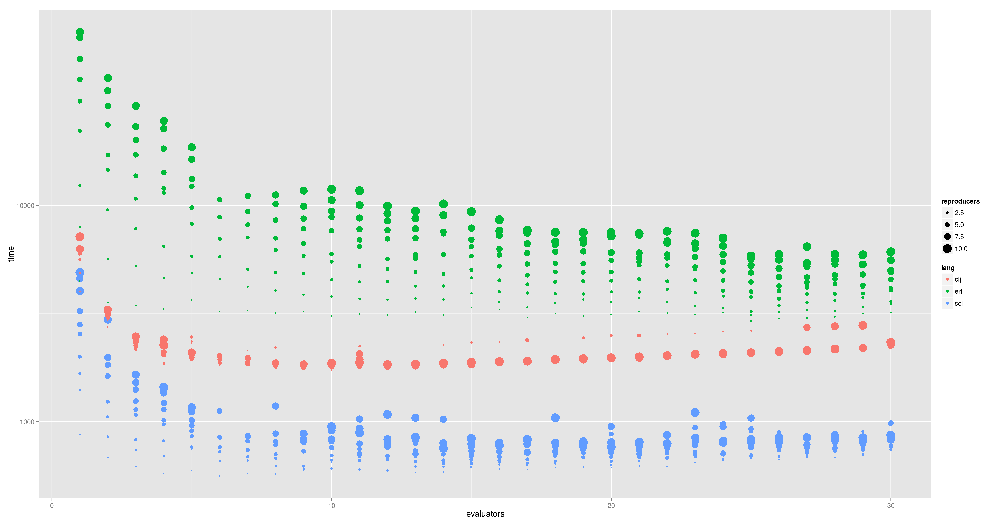
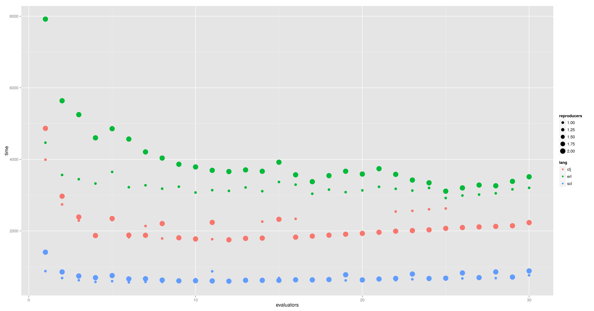
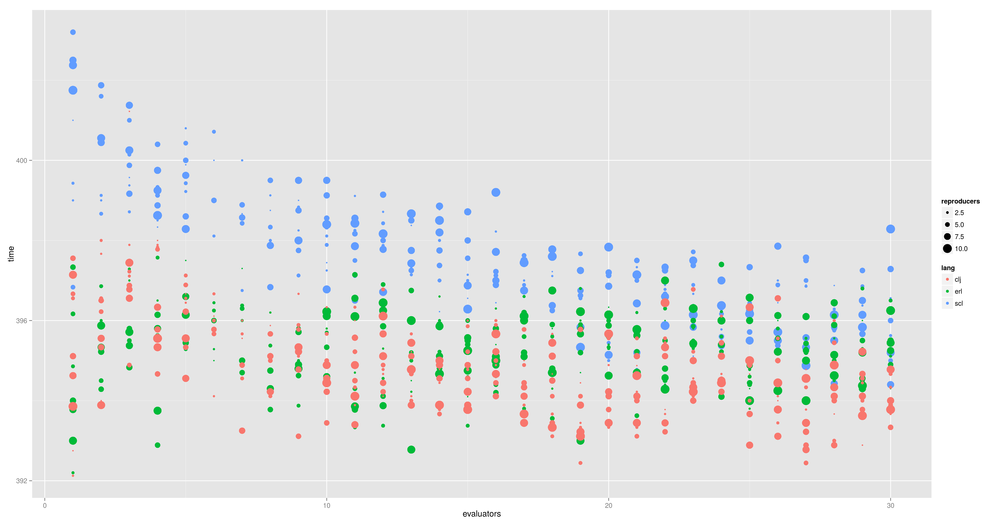

Implementing Parallel Genetic Algorithm Using Concurrent-Functional Languages
J. Albert Cruz, J. J. Merelo, L. Acevedo and P. de las Cuevas
Universidad de Ciencias Informáticas, La Habana, Cuba and Universidad de Granada
Replay this presentation at
Most people like object-oriented or procedural languages
Image from Digimist
But the world is made of functions and threads
Image from Yoshifumi Yamaguchi
Functional and concurrent languages are just different
- Concurrency: Actors, agents, messages.
- Functions, lists.
Scala, Erlang and Clojure are multi-paradigm languages.
Actors doing functions
- Actors are concurrent units of execution with a Lightweight life cycle.
- Actors/agents use immutable messages.
- Functions are the main concept in functional languages.
- Functional languages have efficient implementation of lists.
- And they use of high order functions.
Image from Happenningfish
Research questions
- Can procedural/OO evolutionary algorithm models be translated to functional/concurrent languages?
- Which language yields the highest performance?
Image from NASA Goddard
Concepts and their translation
| Concept | Erlang | Scala | Clojure |
|---|---|---|---|
| Chromosome | List | List | Vector |
| Population | List | List | Lazy list |
| Runtime environment | Erlang VM | Java VM | Java VM |
| Pool structure | ets | HashMap | hash-map |
Changing to a pool-based algorithm
- A pool is an actor.
- The client is an actor requesting individuals from the pool and returning them.
- Separation of architecture and problem encoding.
- Clients can evaluate or reproduce.
Image by Ivan Plata.
Experiments
Solving the MaxSAT problem
- 100 variables
- 5000 evaluations
- 1..30 evaluators, 1..10 reproducers, #reproducers < #evaluators
Image by Diana Robinson
Scala tops the scale
| Language | Parallel time ± SD (ms) | Evaluators | Sequential time | Relative speedup |
|---|---|---|---|---|
| Erlang | 2920.40 ± 126 | 25 | 8143.3 | 2.78 |
| Clojure | 1734.66 ± 28.32 | 10 | 3340.22 | 1.92 |
| Scala | 563 ± 24.32 | 6 | 1651.8 | 2.86 |
Results at a glance
No more evaluators than strictly needed
Scala also rocks solutions
